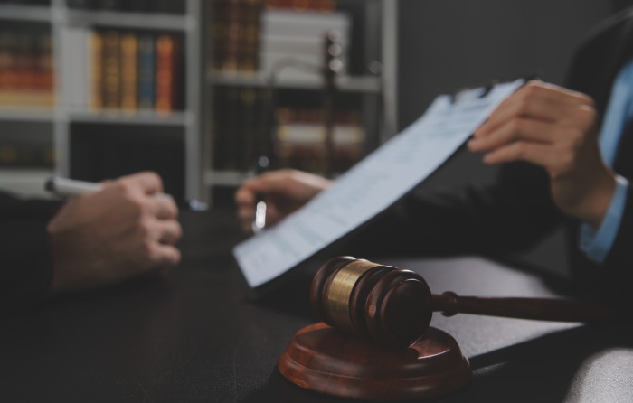

What Does Objection Sustained Mean? A
Simple Guide To Courtroom Rulings
Courtroom rules help keep trials fair, orderly, and focused on relevant evidence. Attorneys may object when they believe a question, statement, or piece of evidence violates legal procedures. When a judge says, “Objection sustained,” the judge agrees with the objection and disallows the challenged material in its current form.
Knowing what this ruling means can make courtroom proceedings easier to follow and help explain how judges maintain fairness during trials. Whether you’re watching a courtroom drama, serving as a juror, or learning about the legal system, understanding “objection sustained” offers useful insight into trial procedures.
What Does Objection Sustained Mean in Court?
When a lawyer objects, they are asking the judge to stop something because they believe it violates courtroom rules. If the judge says, “Objection sustained,” the judge agrees the objection has a valid legal basis. The lawyer who asked the challenged question may need to stop, rephrase it, or change topics.
Depending on the circumstances, the judge may also tell the jury to disregard a statement or exclude evidence from consideration. A sustained objection usually applies to a specific question, statement, or piece of evidence—not necessarily the entire case. When a judge sustains an objection, the judge agrees with the attorney’s legal objection and stops the challenged question, statement, or evidence from proceeding.
A General Practice Attorney can help individuals understand courtroom procedures, explain legal objections, and provide guidance on how judges’ rulings may affect their cases.

Why Do Judges Sustain Objections?
Judges sustain objections to uphold courtroom procedures and ensure attorneys follow the rules of evidence. Common grounds for an objection include:
- Leading question: A question that suggests its answer while an attorney is questioning a witness directly.
- Hearsay: An out-of-court statement offered to prove that it is true, subject to applicable exceptions.
- Relevance: Information that does not meaningfully relate to the issues being decided.
- Argumentative question: A question intended to argue with or provoke a witness rather than elicit relevant information.
- Speculation: A request for an answer based on guesses rather than the witness’s personal knowledge.
- Lack of foundation: Evidence presented without first establishing the necessary background or reliability.
These rules help keep misleading information, unnecessary argument, and unfair questioning from influencing a trial’s outcome.
What Happens After an Objection Is Sustained?
After an objection is sustained, the attorney must stop the challenged question or evidence. The lawyer may rephrase the question, provide additional support, or move on. The judge may also instruct jurors to disregard testimony already given.
Can an Attorney Ask the Same Question Again?
Sometimes. An attorney may ask a similar question after correcting the issue that prompted the objection. For example, if a judge sustains an objection because a question is leading, the attorney may rephrase it as an open-ended question so the witness can answer independently. But repeating the same objectionable question without fixing the legal issue may lead to another sustained objection.
Objection Sustained vs. Objection Overruled
Understanding “sustained” and “overruled” helps you follow courtroom proceedings. When a judge sustains an objection, the judge agrees with the attorney who challenged a question or evidence, and the material generally cannot proceed in its current form. When a judge overrules an objection, the judge rejects the challenge and allows the question, statement, or evidence to proceed, unless another legal restriction applies.
For example, if an attorney asks an irrelevant question and the opposing lawyer objects, the judge may sustain the objection, preventing the witness from answering. If the judge finds the question relevant, the judge may overrule the objection and allow the questioning to continue. These rulings help judges manage proceedings and maintain appropriate trial procedures.
Does an Objection Sustained Mean Someone Wins the Case?
No. When a judge sustains an objection, it means the judge agrees with that specific legal objection—not that the attorney who raised it has won the case.
A trial involves many questions, objections, rulings, and pieces of evidence. The outcome depends on the full record, the applicable law, and the decisions of the judge or jury.
A sustained objection also does not, by itself, prove that a witness is lying or that the opposing attorney acted improperly. It means only that a particular question or statement does not meet the relevant legal requirements.